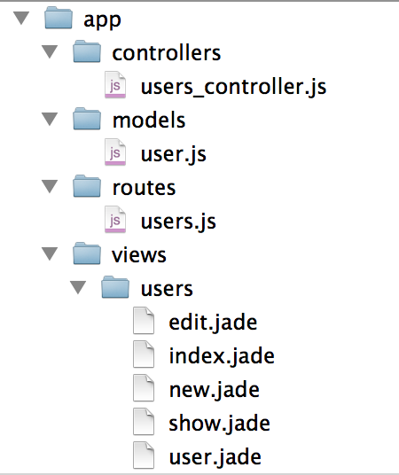

Show Rest
准备
如果你不了解http协议，先看一下https://github.com/i5ting/node-http
什么是REST？
RESTful架构，就是目前最流行的一种互联网软件架构。它结构清晰、符合标准、易于理解、扩展方便，所以正得到越来越多网站的采用。
以下内容摘自阮一峰的文章：
一、起源
REST这个词，是Roy Thomas Fielding在他2000年的博士论文中提出的。
二、名称
Fielding将他对互联网软件的架构原则，定名为REST，即Representational State Transfer的缩写。我对这个词组的翻译是"表现层状态转化"。 如果一个架构符合REST原则，就称它为RESTful架构。
三、资源（Resources）
REST的名称"表现层状态转化"中，省略了主语。"表现层"其实指的是"资源"（Resources）的"表现层"。
四、表现层（Representation）
"资源"是一种信息实体，它可以有多种外在表现形式。我们把"资源"具体呈现出来的形式，叫做它的"表现层"（Representation）。
五、状态转化（State Transfer）
访问一个网站，就代表了客户端和服务器的一个互动过程。在这个过程中，势必涉及到数据和状态的变化。
六、综述
综合上面的解释，我们总结一下什么是RESTful架构：
（1）每一个URI代表一种资源； （2）客户端和服务器之间，传递这种资源的某种表现层； （3）客户端通过四个HTTP动词，对服务器端资源进行操作，实现"表现层状态转化"。
说的通俗一点，改变url写法，让它带有状态，即语义化
更多详见：
- http://www.ruanyifeng.com/blog/2011/09/restful.html
- http://www.restapitutorial.com/lessons/whatisrest.html
请求方法
一般会严格要求请求方法及其释义，下面给出常用的请求方法
- 如果请求头中存在
X-HTTP-Method-Override或参数中存在_method（拥有更高权重），且值为GET,POST,PUT,DELETE,PATCH,OPTION,HEAD之一，则视作相应的请求方式进行处理 GET,DELETE,HEAD方法，参数风格为标准的GET风格的参数，如url?a=1&b=2POST,PUT,PATCH,OPTION方法- 默认情况下请求实体会被视作标准 json 字符串进行处理，当然，依旧推荐设置头信息的
Content-Type为application/json - 在一些特殊接口中（会在文档中说明），可能允许
Content-Type为application/x-www-form-urlencoded或者multipart/form-data，此时请求实体会被视作标准POST风格的参数进行处理
- 默认情况下请求实体会被视作标准 json 字符串进行处理，当然，依旧推荐设置头信息的
关于方法语义的说明：
OPTIONS用于获取资源支持的所有 HTTP 方法HEAD用于只获取请求某个资源返回的头信息GET用于从服务器获取某个资源的信息- 完成请求后返回状态码
200 OK - 完成请求后需要返回被请求的资源详细信息
- 完成请求后返回状态码
POST用于创建新资源- 创建完成后返回状态码
201 Created - 完成请求后需要返回被创建的资源详细信息
- 创建完成后返回状态码
PUT用于完整的替换资源或者创建指定身份的资源，比如创建 id 为 123 的某个资源- 如果是创建了资源，则返回
201 Created - 如果是替换了资源，则返回
200 OK - 完成请求后需要返回被修改的资源详细信息
- 如果是创建了资源，则返回
PATCH用于局部更新资源- 完成请求后返回状态码
200 OK - 完成请求后需要返回被修改的资源详细信息
- 完成请求后返回状态码
DELETE用于删除某个资源- 完成请求后返回状态码
204 No Content
- 完成请求后返回状态码
上面是比较常见的，估计大部分人最常用的是2个，get和post，具体每个怎么玩，下面会给出实例
最常见的增删改查
以前大家都认为管理信息系统就是crud，认为没有啥技术含量，哎，真正能把crud写明白其实也不是一件容易的事儿
七个路由，见app/routes/users.js
其中4个路由是crud
- GET /users[/] => user.list()
- POST /users[/] => user.create()
- PATCH /users/:id => user.update()
- DELETE /users/:id => user.destroy()
另外3个是页面渲染用的
- GET /users/new => user.new()
- GET /users/:id => user.show()
- GET /users/:id/edit => user.edit()
那么我们先来看一下crud对应的请求方法
- get用于请求列表
- post用于创建
- patch用于更新，局部更新资源
- delete用于删除
对比上一节的内容，你会发现他们的含义貌似真的对了，唯一可能有争议是更新，有的人用put有的用patch，推荐patch
以前做java的时候会认为，创建、删除和更新都用post，查询和搜索用get，这样做没问题，只是不符合rest风格而已。
很多人和我讨论过到该不该rest，我的回答是
express代码分层
默认的express生成器生成的只有routes和views文件夹，相对比较简单，做大型应用怎么能少了mvc呢？
于是我仿照rails写了如下代码分层
- routes 路由层，只有url和中间件，不包含任何逻辑
- controllers 业务逻辑控制层
- models 模型层
- views 视图层
如下图

路由层
上代码
var express = require('express');
var router = express.Router();
var $ = require('../controllers/users_controller');
// -- custom
/**
* Auto generate RESTful url routes.
*
* URL routes:
*
* GET /users[/] => user.list()
* GET /users/new => user.new()
* GET /users/:id => user.show()
* GET /users/:id/edit => user.edit()
* POST /users[/] => user.create()
* PATCH /users/:id => user.update()
* DELETE /users/:id => user.destroy()
*
*/
router.get('/new', $.new);
router.get('/:id/edit', $.edit);
router.route('/')
.get($.list)
.post($.create);
router.route('/:id')
.patch($.update)
.get($.show)
.delete($.destroy);
module.exports = router;
和普通的路由代码一样，稍微改造了一下，统一了地址，应该是更清晰了。
这里只是引入了users_controller文件，完成请求地址和业务处理代码的映射而已。
这里还要讨论一个问题，每次增加一个接口就要加一个路由会比较烦，而且要在app.js里配置，能不能自动加载呢？比如app/routes目录下的所有js都可以挂载到app上
答案是可以的，使用我写的mount-routes即可，示例如下：
var express = require('express')
var app = express()
var mount = require('mount-routes');
// 简单用法，加载app/routes下的所有路由
// mount(app);
// 带路径的用法，加载routes2目录下的所有路由
// mount(app, 'routes2');
// 带路径的用法并且可以打印出路有表
mount(app, 'routes2', true);
// start server
app.listen(23018)
更多内容见
控制层
/**
* Created by sang on 01/06/14.
*/
var User = require('../models/user');
首先，控制层是控制业务处理的，所以它和模型层打交道比较多，同时控制视图如何展示
exports.list = function (req, res, next) {
console.log(req.method + ' /users => list, query: ' + JSON.stringify(req.query));
User.getAll(function(err, users){
console.log(users);
res.render('users/index', {
users : users
})
});
};
请求所有列表，很简单，获取所有用户即可
exports.new = function (req, res, next) {
console.log(req.method + ' /users/new => new, query: ' + JSON.stringify(req.query));
res.render('users/new', {
user : {
"_action" : "new"
}
})
};
新建用户，实际是render视图而已，没有啥逻辑，user参数是为了我生成代码方便用的，无他
exports.show = function (req, res, next) {
console.log(req.method + ' /users/:id => show, query: ' + JSON.stringify(req.query) +
', params: ' + JSON.stringify(req.params));
var id = req.params.id;
User.getById(id, function(err, user) {
console.log(user);
res.render('users/show', {
user : user
})
});
};
同new，是render视图代码
exports.edit = function (req, res, next) {
console.log(req.method + ' /users/:id/edit => edit, query: ' + JSON.stringify(req.query) +
', params: ' + JSON.stringify(req.params));
var id = req.params.id;
User.getById(id, function (err, user) {
console.log(user);
user._action = 'edit';
res.render('users/edit', {
user : user
})
});
};
同new，是render视图代码
exports.create = function (req, res, next) {
console.log(req.method + ' /users => create, query: ' + JSON.stringify(req.query) +
', params: ' + JSON.stringify(req.params) + ', body: ' + JSON.stringify(req.body));
User.create({name: req.body.name,password: req.body.password}, function (err, user) {
console.log(user);
res.render('users/show', {
user : user
})
});
};
这段是创建用户的代码，根据post参数，保存入库，跳转到展示详情页面
exports.update = function (req, res, next) {
console.log(req.method + ' /users/:id => update, query: ' + JSON.stringify(req.query) +
', params: ' + JSON.stringify(req.params) + ', body: ' + JSON.stringify(req.body));
var id = req.params.id;
User.updateById(id,{name: req.body.name,password: req.body.password}, function (err, user) {
console.log(user);
res.json({
data:{
redirect : '/users/' + id
},
status:{
code : 0,
msg : 'delete success!'
}
});
});
};
和创建类似，它是根据id来更新内容
exports.destroy = function (req, res, next) {
console.log(req.method + ' /users/:id => destroy, query: ' + JSON.stringify(req.query) +
', params: ' + JSON.stringify(req.params) + ', body: ' + JSON.stringify(req.body));
var id = req.params.id;
User.deleteById(id, function (err) {
console.log(err);
res.json({
data:{},
status:{
code : 0,
msg : 'delete success!'
}
});
});
};
和创建类似，它是根据id来删除内容
以上代码形式都是一样的
exports.xxxx = function (req, res, next) {
...
}
他实际上connect中间件的标准写法，如果你熟悉express，可以非常简单的上手，看了这些代码，你一定很好奇，User模型是怎么工作的，而且mongoose里并没有这些方法啊，下面会详细说明
模型层
我们的模型层使用的是比较传统的mongoose，如果需要promise库，可以搭配bluebird
/**
* Created by alfred on 01/06/14.
*/
var mongoose = require('mongoose');
var Schema = mongoose.Schema;
var MongooseDao = require('mongoosedao');
var userSchema = new Schema(
{"name":"String","password":"String"}
);
var User = mongoose.model('User', userSchema);
var UserDao = new MongooseDao(User);
module.exports = UserDao;
这实际是最简单的定义mongoose模型的方法，我们唯一做的改进是增加了MongooseDao
DAO是java的概念，是data access object，即数据访问对象，就是传说的crud方法
你只要知道模型就好，为啥每个crud都要写呢？那得多烦啊
var UserDao = new MongooseDao(User);
这样就可以给user增加了基本的crud方法
所以在controller里我们看到了如下代码
- User.getAll(function(err, users){
- User.getById(id, function(err, user) {
- User.create({name: req.body.name,password: req.body.password}, function (err, user) {
- User.updateById(id,{name: req.body.name,password: req.body.password}, function (err, user) {
- User.deleteById(id, function (err) {
这5个方法，完美的完成crud的所有操作，是不是很爽？至少少写了很多代码
而且当你想扩展的时候，你可以使用User.model来操作mongoose对象
比如login，我需要在User模型增加is_exist方法
var mongoose = require('mongoose');
var Schema = mongoose.Schema;
var MongooseDao = require('mongoosedao');
var userSchema = new Schema(
{"name":"String","password":"String"}
);
userSchema.methods.is_exist = function(cb) {
var query;
query = {
username: this.username,
password: this.password
};
return this.model('User').findOne(query, cb);
};
var User = mongoose.model('User', userSchema);
var UserDao = new MongooseDao(User);
module.exports = UserDao;
这就是mongoose里的实例方法，static方法也是一样，你可以玩各种花样
然后控制层
exports.login = function (req, res, next) {
username = req.body.username;
password = req.body.password;
user = new User.model({
username: username,
password: password
});
return user.is_exist(function(err, usr) {
。。。
});
}
是不是很简单？
视图层
视图层我们采用express默认的jade，无论各位怎么看，jade都可圈可点
1）extends 方式使用布局 2）include 复用模型代码 3）block 复用块代码
以new.jade和edit.jade为例，它们具有代表性
new.jade
extends ../layouts/layout
block content
h1 New user
include user
a(href='/users') Back
edit.jade
extends ../layouts/layout
block content
h1 Editing user
include user
a(href='/users/#{ user._id}') Show
span |
a(href='/users') Back
首先要说明的是include用法，include类似于partial概念，可以包含一个jade作为一部分
jade里有一个约定，你include了谁，它就要把这个对象传进去
所以user.jade里才是我们复用的重点
- var _action = user._action == 'edit' ? '#' : '/users/'
- var _method = user._action == 'edit' ? "" : "post"
- var _type = user._action == 'edit' ? "button" : "submit"
- var onClick = user._action == 'edit' ? "click_edit('user-" + user._action + "-form','/users/" + user._id + "/')" : ""
form(id='user-#{ user._action}-form',action="#{_action}", method="#{_method}",role='form')
each n in ['user.name','user.password']
- m = eval(n);
div(class="field")
label #{n.split('.')[1]} #{m}
br
input(type='text',name="#{n.split('.')[1]}" ,value="#{ m == undefined ? '' : m }")
div(class="actions")
input(type='#{_type}',value='Submit',onClick='#{onClick}')
这段是为了复用写的代码，可读性不强，但可以说明include用法，对于代码而言，达到了一定的复用
实际上我们自己jade的适合要尽可能的拆分成小块去复用，当需求变得时候更容易应变。提醒强迫症患者，当心物极必反，不要刻意去强求
总结一下
RESTful架构大势所趋，代码写的标准了让人觉得赞
Expressjs下可以写的很规范，可以有做大应用，可以有很好的分层
展示了MVC + Routes的标准rest写法
使用了几个开源代码
- mount-routes
- MongooseDao
完成了以上工作，我们还要继续反思一下，既然rest是标准，写法很固定，是不是可以量产呢？答案是可以的，我展示的所有代码是根据一条命令搞定的
moag user name:string password:string
这就是我目前在写的一个开源项目，待可用的时候会公开的，敬请期待
欢迎关注我的公众号【node全栈】